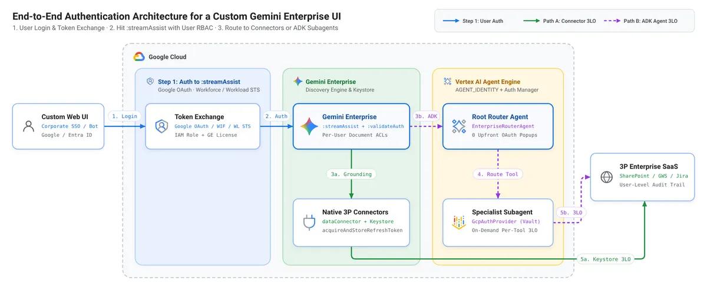
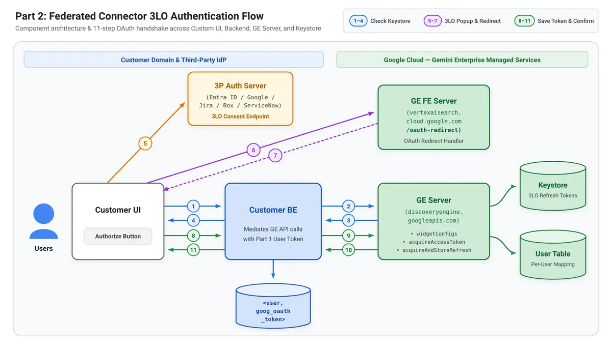

自建前端接 StreamAssist：三層驗證自己扛
導讀Google Developers 官方部落格技術教學，逐層拆解自建 Customer UI 呼叫 StreamAssist API 的身分驗證——原文附架構圖、逐步流程與 GitHub 可執行程式碼
官方 Web app 在背後代勞的三件事，一旦換成自建前端直接打 StreamAssist API，就變成 Customer UI 與 Customer BE 的工作。
三層驗證：官方代勞的，現在是你的
用官方 Web app 時，IAM 全在背後：員工用 Google Identity 或 Workforce Identity Federation 登入，搜尋結果自動套用個人 ACL。
Federated Connectors 與自訂代理的第三方登入提示，也自己跳在聊天介面裡。
但只要自建介面嵌進內部入口網站、內網或業務系統，由 Customer BE 直接呼叫 StreamAssist，三條流程就落到你身上。
原文把它們拆成三層，逐層給架構、元件流程與可執行的程式碼。
| 層 | 憑證主體 | 原文機制與限定 |
|---|---|---|
| 1 對 StreamAssist 驗證 | 員工（1A／1B）或工作負載（1C） | Google Identity、Workforce Identity Federation、Workload Identity Federation 三種免金鑰模式 |
| 2 Federated Connectors | 每位員工各自的 3LO 授權 | BE 發起查詢（Step 2），由 Gemini Enterprise 伺服器查 Keystore 有無有效 token（Step 3），沒有才跳 3LO；refresh token 存回 Keystore，BE 不須自己存 |
| 3 ADK 代理的逐工具 OAuth | 代理的 Agent Identity | 受保護工具包 GcpAuthProvider（背後是 Token Vault），只在呼叫該工具時才跳 3LO |

三層不是並列選項。第 2、3 層都踩在第 1 層上：先有員工身分，連接器與代理的授權才有主體。
打 StreamAssist：三種免金鑰模式
1A 最短：Customer UI 用 Google Identity Services 帶 GCP scope 讓員工登入，Google 回傳該員工的 access token。
1A 有前提：員工用 Google Workspace 或 Cloud Identity 登入，且引擎本身設成 Google Identity。
Customer BE 把這顆 Bearer token 直接送給 StreamAssist，中間沒有額外跳轉。
1B 給用 Microsoft Entra ID 或 Okta 登入的企業：把自建 app 的 Client ID 註冊到既有的 Workforce Pool OIDC Provider。
BE 再拿 IdP 發的 OIDC token 到 Google STS 換短效 access token。
換回來的身分代表那名 Workforce Pool 使用者，員工的群組權限與文件 ACL 照樣生效。
1C 是機器身分：後端服務、Slack／Teams webhook 或非個人化的知識 bot，走專案的 Workload Identity Pool，硬碟上零金鑰。
代價寫得清楚：Workload Identity Federation（模式 1C）認證的是機器，Gemini Enterprise 會把每個請求看成同一個工作負載身分。
要逐使用者的文件 ACL、個人化的 3LO 連接器或受限的自訂代理，就只能走 1A 或 1B。
三種模式都逃不掉前置條件：呼叫端要在此 GCP 專案有 Discovery Engine User 角色。
人類模式還多一項：每位使用者（或 Workforce Pool 群組）要在 Admin Console 有啟用中的 Gemini Enterprise 授權。
連接器與 ADK：差在授權粒度
原生 Federated Connectors 查的是即時第三方 API，因此逐使用者授權，走 3LO。

3LO 的作用是收窄範圍：連接器只取該員工有權限的 Drive 檔案、SharePoint 網站、Jira 問題與 ServiceNow 事件。
11 步分三個階段：查 Keystore、跳 3LO 同意視窗、把 refresh token 存回 Keystore。
Customer BE 不須自己儲存第三方憑證（原文：never has to store third-party credentials in its own database）；回呼仍會經過 BE 轉交。
自建網域有個坑。連接器固定回呼到 Google 管理的 /oauth-redirect，該頁預設只對官方 Web app 的 origin 發 postMessage。
要讓第 7 步把回呼交回你的介面，得跟 Gemini Enterprise 團隊開啟自訂 origin 旗標。
ADK 代理的麻煩在根層。靜態 OAuth 掛在根代理註冊上，第一回合還沒進到你的程式就被整包擋住。
原文的例子：同時接 Google Drive 與 Microsoft SharePoint 的助理，使用者連問一句一般政策，也得先把所有登入走完。
第二個問題是綁死官方介面：根層授權為官方 Web UI 而設計，不會透過 StreamAssist API 回傳工具層級的授權提示。
解法是下放到工具：受保護工具用 AuthenticatedFunctionTool 包 GcpAuthProvider，指向 GCP Auth Manager 的 Auth Provider 資源。
設定要回填到第三方 app：在 Cloud Console 為每個第三方 OAuth app 建一個 3LO Auth Provider。
Default Continue URI 設成 Customer UI 的 /validateUserId，並把 GCP Auth Manager 的 /oauthcallback 加進 Entra ID 的 Redirect URI。
代理部署到 Vertex AI Agent Engine 時開 Agent Identity，取得內建的 SPIFFE 身分，再授予 Agent Identity Service Agent 角色，才能從 Token Vault 取 token。
19 步的差別在結尾：首次呼叫才跳 3LO，token 進了 Token Vault，之後同一個 session 單回合跑完、不再彈窗。
原文把三層、可互動的測試介面、CLI 與 curl 指令都收進一個 GitHub repo：gemini-enterprise-custom-ui-auth，三個目錄對應三層。
帶走三件事
自建介面等於接手 IAM。三層驗證要自己接線，不只是換個前端。
別在根層掛靜態 OAuth。它會在第一回合前鎖死整個代理。
憑證留在 Keystore／Token Vault。後端不必自建憑證庫。
同一主題的其他館藏
導讀為本站編輯內容（AI 摘解自原文與館藏重點，非官方文件）；三層架構、11 步與 19 步流程、模式編號均出自原文，未經第三方驗證。兩張圖為原文圖，自託管呈現。內容經對照原文的獨立事實審查後發布。